Repair Procedures
Replacement
Floor Console Replacement
[M/T]
CAUTION:
- A plastic trim tool is recommended, but if prying with a screwdriver, wrap it with protective tape, and apply protective tape around the related parts, to prevent damage.
- Put on gloves to protect your hands.
1. Using a screwdriver or remover, remove the crash pad center garnish (A).
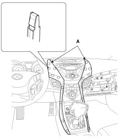
2. Using a screwdriver or remover, remove the gear boot (A).
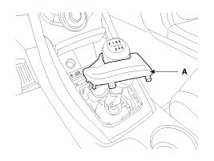
3. After loosening the mounting screws, then remove the console upper cover (A).
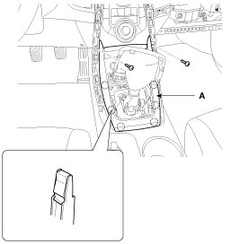
4. Disconnect the connectors (A).
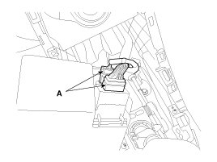
5. Using a screwdriver or remover, remove the parking brake cover (A).
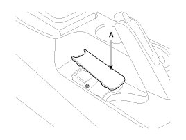
6. Remove the console tray mat (A).
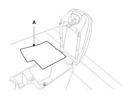
7. After loosening the mounting screws and bolts, then remove the floor console assembly (A).
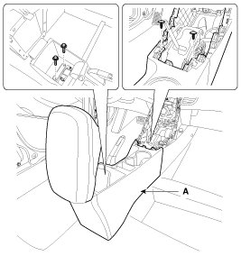
8. After loosening the mounting screw, nut, clip, then remove the console side cover (A).
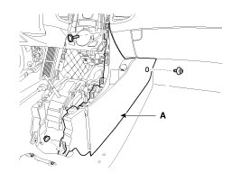
9. Disconnect the connector (A).

10. Installation is the reverse of removal.
NOTE:
- Make sure the connectors are connected in properly.
- Replace any damaged clips.
[A/T]
CAUTION:
- A plastic trim tool is recommended, but if prying with a screwdriver, wrap it with protective tape, and apply protective tape around the related parts, to prevent damage.
- Put on gloves to protect your hands.
1. Using a screwdriver or remover, remove the crash pad center garnish (A).

2. Using a screwdriver or remover, remove the gear knob cover (A).
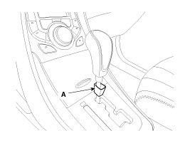
3. Remove the lock pin (B).
4. Remove the gear knob (A).
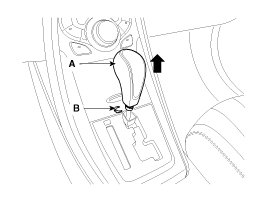
5. After loosening the mounting screws, remove the console upper cover (A).
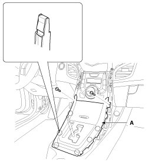
6. Disconnect the connectors (A).
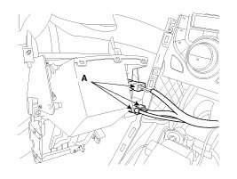
7. Using a screwdriver or remover, remove the parking brake cover (A).
8. Remove the console tray mat (A).
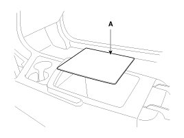
9. After loosening the mounting screws and bolts, then remove the floor console assembly (A).
10. After loosening the mounting screw, nut, clip, then remove the console side cover (A).
11. Disconnect the connector (A).
12. Installation is the reverse of removal.
NOTE:
- Make sure the connectors are connected in properly.
- Replace any damaged clips.
Armrest Replacement
CAUTION:
- When prying with a flat-tip screwdriver, wrap it with protective tape, and apply protective tape around the related parts, to prevent damage.
- Put on gloves to protect your hands.
1. Using a screwdriver or remover, remove the rear console cover (A).
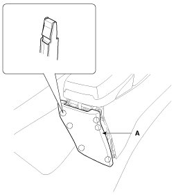
2. After loosening the mounting screws, then remove the armrest assembly (A).
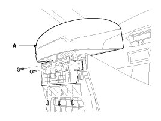
3. Installation is the reverse of removal.
NOTE:
- Replace any damaged clips.